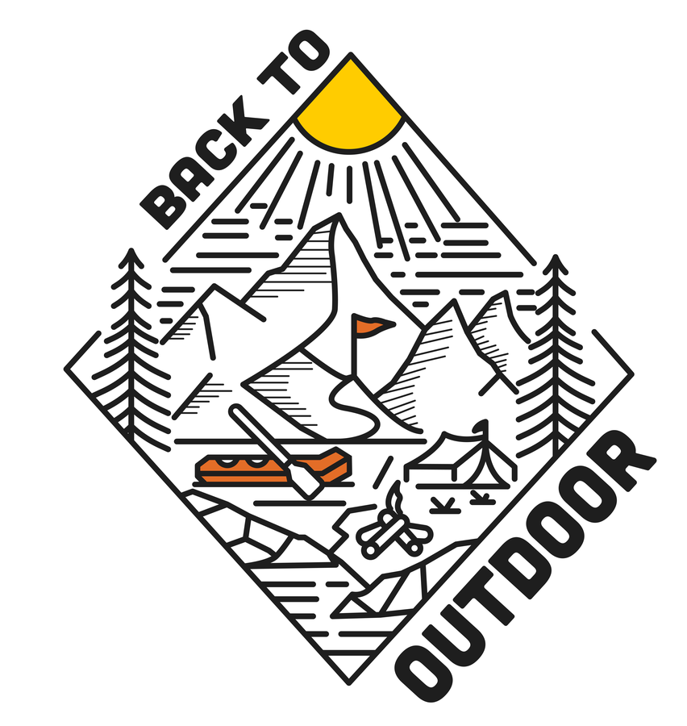
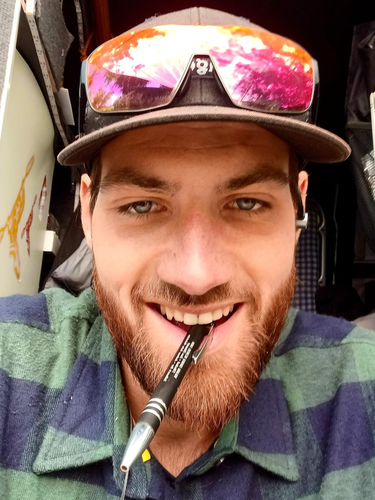
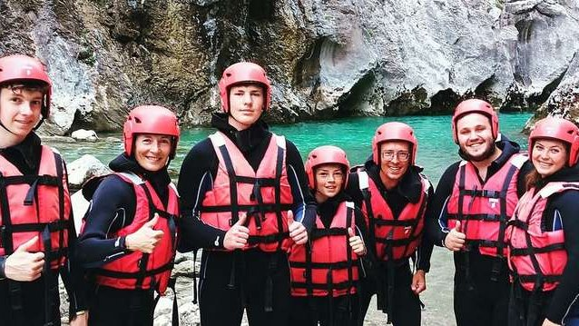
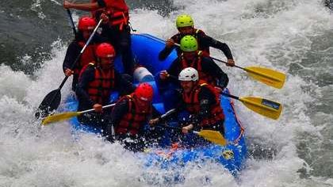
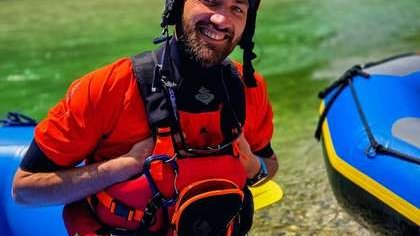

Production vidéo et photo professionnelle réalisée directement sur place, chez votre entreprise outdoor ou de voyage — du contenu prêt à publier qui montre ce que vos hôtes vivent vraiment, et qui vend.
Trois façons de travailler avec Back to Outdoor – d'une journée de contenu ponctuelle à un partenariat de studio de contenu continu. Ce qui vous convient, nous le déterminons lors d'un court échange, pas sur une liste de prix.
Nous accompagnons l'une de vos tours ou expériences sur place et capturons ce qui se passe réellement – pas de mise en scène publicitaire, mais de vrais clients, de vraies réactions.
Sur plusieurs semaines, une ligne de contenu cohérente se met en place au lieu de clips isolés – du premier moment d'expérience jusqu'à l'histoire de clients individuels.
Une collaboration continue avec des dates de tournage régulières et un planning éditorial commun. Les marques et équipements visibles sont intégrés de façon organique là où c'est pertinent – une vraie coopération plutôt qu'une publicité forcée.
Lors des tours accompagnées, vos clients peuvent acheter leur propre vidéo personnelle directement sur place – une valeur ajoutée pour eux, une source de revenus supplémentaire pour vous. Ou offrez-la à vos clients en souvenir. Se combine avec chacune des trois formules.
Tarifs individuels selon l'ampleur – nous en discutons lors du premier échange pour trouver ce qui correspond à votre projet.
Parce que chaque projet est différent – la taille de vos tours, la fréquence à laquelle vous avez besoin de contenu, s'il s'agit d'une expérience ponctuelle ou d'un partenariat continu. Après un court échange, vous recevez une offre adaptée précisément à votre projet.
Oui. La Journée Contenu est faite pour ça – une première étape simple, sans engagement à long terme.
Pour la Journée Contenu : généralement quelques jours après le tournage. Pour la Série de Contenu et le Partenariat, nous convenons du rythme ensemble.
Trois cibles, un point commun : la confiance se construit avant la première réservation.
Des campagnes produit qui naissent sur le terrain, pas en studio.
Du contenu qui transforme une demande de réservation en réservation.
Une identité visuelle qui capture la région et l'expérience sur place.
Nous filmons ce que nous avons vécu nous-mêmes. Ça se voit.
Pas seulement beau — conçu pour convertir.
Pas un tournage isolé, mais un flux de contenu continu.
Et pourquoi la plupart des marques finissent par nous choisir.
Nous examinons votre présence actuelle et identifions le potentiel.
Vous recevez un plan concret de ce que nous réaliserons sur place – périmètre et calendrier inclus.
Nous produisons, vous recevez du contenu fini – prêt pour vos campagnes, votre feed et votre site.
Une sélection de nos travaux sur le terrain. Les tarifs sont individuels – contactez-nous simplement pour une offre.


Accompagnement de plusieurs jours pour un organisateur de tours international, Verdon.


Torrent Outdoor — contenu d'eaux vives sur notre rivière locale, région de Salzbourg.


AOS rafting.at — contenu dans le parc national de Gesäuse, Styrie.


Contenu voyage et safari pour une ferme d'hôtes en Namibie.
Notre Media Kit résume notre façon de travailler, ce que comprend un projet ou un partenariat, et les marques que nous avons déjà accompagnées. Idéal à faire circuler en interne avant de décider d'un premier échange.

Back to Outdoor croit que, dehors dans la nature, les gens se dépassent. Nous le vivons nous-mêmes – nous sommes sur place, nous vivons ce que nous filmons, puis nous racontons l'histoire. C'est ce qui rend notre contenu crédible, sincère et authentique.
Articles éditoriaux tirés de nos tours et tournages – avec un aperçu du matériel, des terrains et de notre façon de travailler.

Confiance en soi, pleine conscience, dépasser ses limites et lâcher prise — l'histoire derrière @backtooutdoor.
Lire l'article →
Un retour éditorial avec des recommandations de tours.
Lire l'article →
Ce qui tient vraiment face au vent, à l'eau et à la lumière changeante.
Lire l'article →Demandez notre Media Kit ou écrivez-nous directement — nous vous répondons sous deux jours ouvrés.